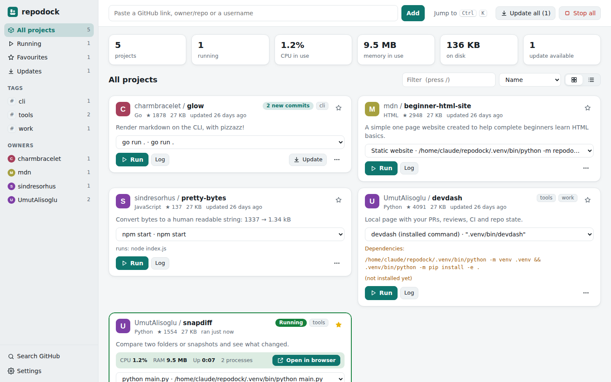

LOCAL REPOSITORY DASHBOARD01

Repodock
APP LAUNCHERFound something interesting on GitHub? Paste the link, download the project, and run it from one local dashboard.
- Run and stop projects
- See output and resource use
- Windows installer available